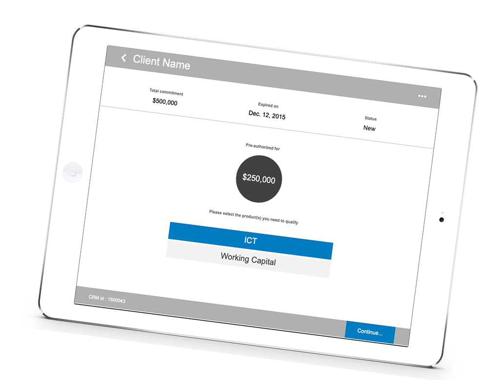
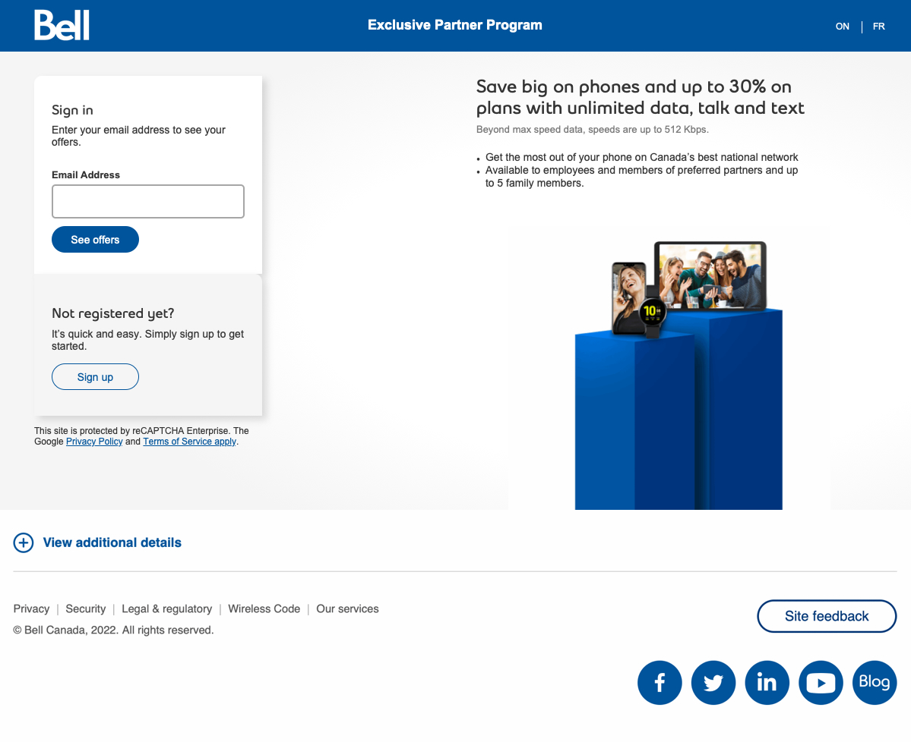
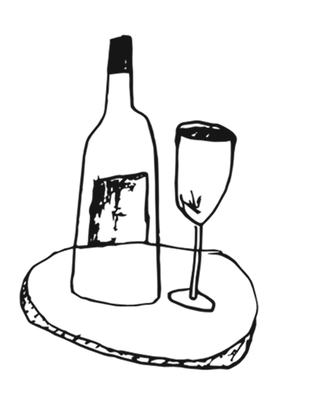

Disponible pour un poste permanent Senior / Lead UX
Yannick Roy
Lead UX & Product Designer avec 17 ans d’expérience. Spécialisé en ergonomie cognitive, design centré utilisateur et transformation de services complexes.
Projets
BDC
Refonte d'un système national d'autorisation de prêts. Réduction du cycle de validation de 10 jours à 24 heures, facilitant 240 M$ de transactions.

Bell Canada
Benchmark, tests utilisateurs et audit d'accessibilité pour Bell Canada. Exemple d'application au portail EPP.

Boires.ca
Design d'une plateforme spécialisée vin. Alignement des règles d'affaires et définition des parcours utilisateurs.

Expertise
Ergonomie Cognitive
Compréhension du fonctionnement humain (système attentionnel, mémoire, théories de l'apprentissage) appliquée à la conception d'interfaces pour réduire la charge mentale.
Design Centré Utilisateur (UX)
Philosophie et processus holistiques plaçant l'humain au cœur de la conception, de la recherche exploratoire à la validation continue.
Architecture d'Information & Systèmes
Structuration de systèmes d'information, modélisation de flux d'affaires complexes (workflows) et gouvernance de solutions évolutives.
Prêt à rejoindre votre équipe
Actuellement ouvert aux opportunités permanentes en tant que Senior ou Lead UX / Product Designer. Basé à Ottawa (disponible pour le télétravail).
Discuter d’une opportunité